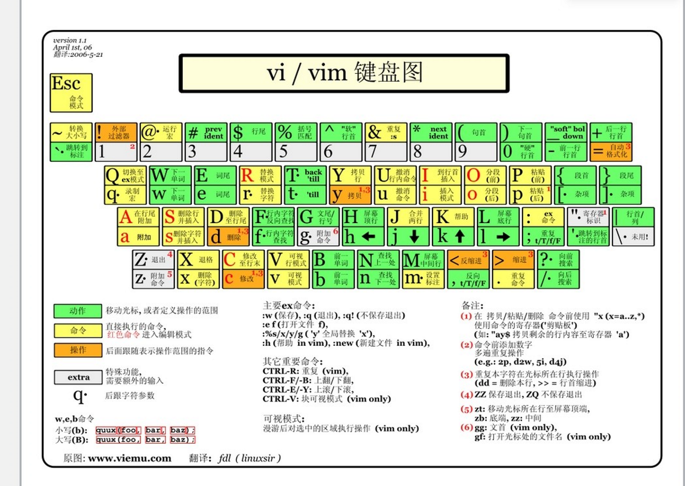

键盘图
Vim 实用技巧（视频简略教程）- + 寄存器是系统剪贴板
ctrl + o 插入正常模式，在插入模式下输入，正常模式一个命令就回插入模式ctrl + v 选择多行（编辑）- 选择的时候加
i 比如 iw 是当前单词 - 可视模式下按
o切换光标位置（选择块前或者选择块后） - V 是整行选，v不是
- 视频
:noh 取消高亮
ctrl + o 插入正常模式，在插入模式下输入，正常模式一个命令就回插入模式ctrl + v 选择多行（编辑）i 比如 iw 是当前单词o切换光标位置（选择块前或者选择块后）:noh 取消高亮VIM配置WSL2 Ubuntu本地配置位置 /.vim/vimrcWindows C:/Program Files/Vim/_vimrc手动安装配色- (1) 确认当前用户目录下存在~/.vim/colors目录，没有则新建，安装的Vim配色方案对应.vim文件需放在该目录下
- (2) 下载或编辑某个配色方案的.vim文件，保存到~/.vim/colors目录下
- (3) 修改Vim配置文件~/.vimrc，增加配置项colorscheme molokai并保存 (假设下载了一个叫molokai的配色方案文件molokai.vim)
- 来源：https://vimjc.com/vim-color-schemes.html
- 然后 .vimrc:
colorscheme [name]colorscheme gruvbox
缩进设置shiftwidth reindent 操作（<<和>>）时缩进的列数（这里的一列相当于一个空格）
tabstop 一个tab键所占的列数，linux 内核代码建议每个tab占用8列
softtabstop 敲入tab键时实际占有的列数。
expandtab 输入tab时自动将其转化为空格自动缩进
:set autoindent 回车后自动缩进
通常Java的配置方式是：
:set softtabstop=4 shiftwidth=4 expandtab
Linux kernel的配置方式：
:set tabstop=8 softtabstop=8 shiftwidth=8 noexpandtab作者：Ailily 来源：简书 著作权归作者所有。商业转载请联系作者获得授权，非商业转载请注明出处。
WSL2 Ubuntu本地配置位置
/.vim/vimrcWindows
C:/Program Files/Vim/_vimrc- (1) 确认当前用户目录下存在~/.vim/colors目录，没有则新建，安装的Vim配色方案对应.vim文件需放在该目录下
- (2) 下载或编辑某个配色方案的.vim文件，保存到~/.vim/colors目录下
- (3) 修改Vim配置文件~/.vimrc，增加配置项colorscheme molokai并保存 (假设下载了一个叫molokai的配色方案文件molokai.vim)
- 来源：https://vimjc.com/vim-color-schemes.html
- 然后 .vimrc:
colorscheme [name]colorscheme gruvbox
shiftwidth reindent 操作（<<和>>）时缩进的列数（这里的一列相当于一个空格）
tabstop 一个tab键所占的列数，linux 内核代码建议每个tab占用8列
softtabstop 敲入tab键时实际占有的列数。
expandtab 输入tab时自动将其转化为空格
自动缩进
:set autoindent 回车后自动缩进
通常Java的配置方式是：
:set softtabstop=4 shiftwidth=4 expandtab
Linux kernel的配置方式：
:set tabstop=8 softtabstop=8 shiftwidth=8 noexpandtab
作者：Ailily
来源：简书
著作权归作者所有。商业转载请联系作者获得授权，非商业转载请注明出处。